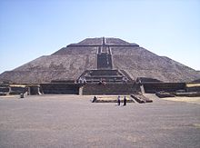

Las pirámides eran escalonadas, aunque cada cara del triángulo estaba enmarcada por franjas lisas en sus ángulos. Las capillas de las pirámides estaban decoradas con relevos, y su construcción se realizó usando piedra arenosa. Las últimas pirámides se construyeron de ladrillo y la superficie se escayolaba. Las pirámides construidas en el Oeste fueron ocupadas sobre todo por miembros de la nobleza y por familias importantes de Meroe. Hacia el año 350, con el ocaso del imperio, dejaron de construirse pirámides en la región.37
